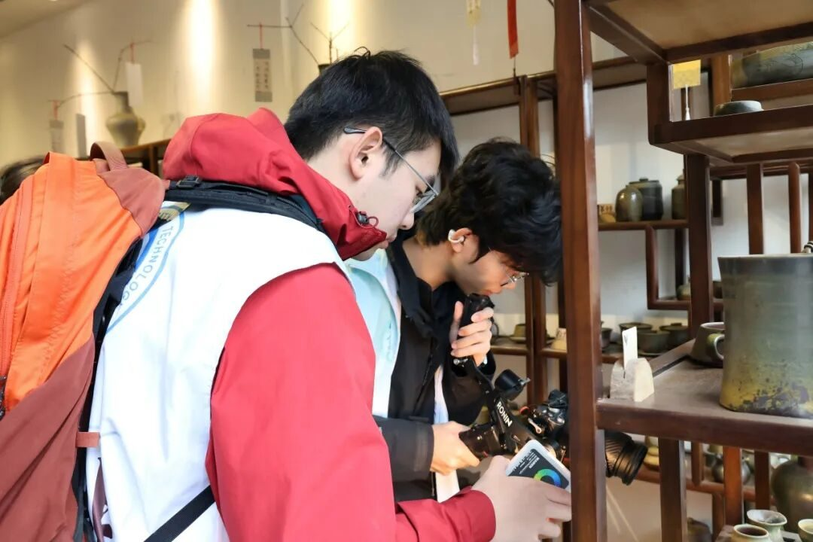
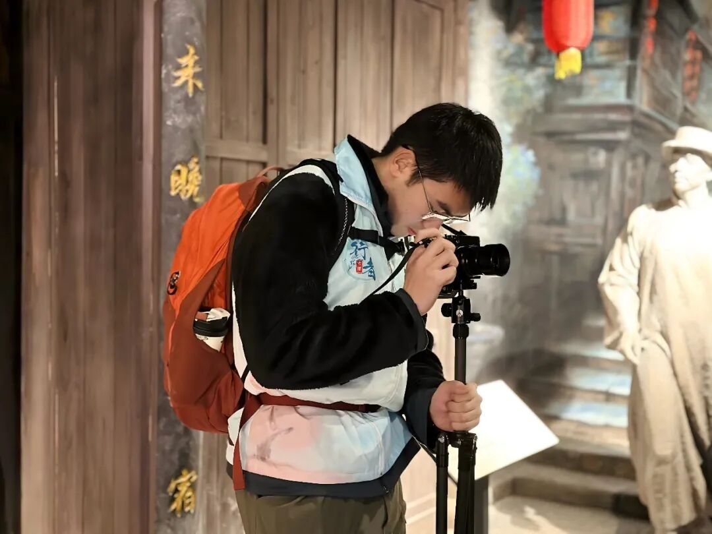
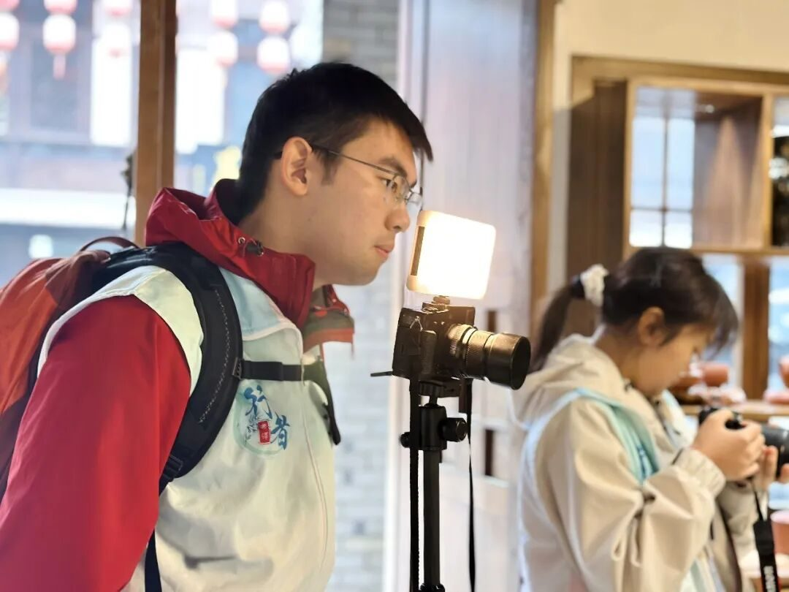
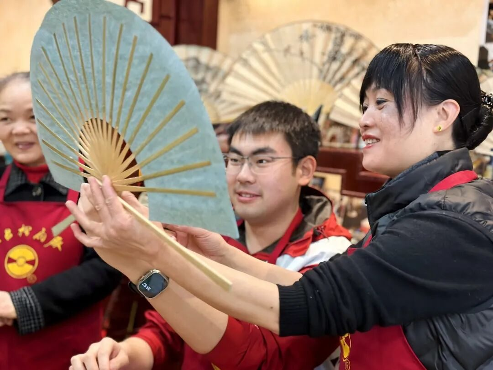
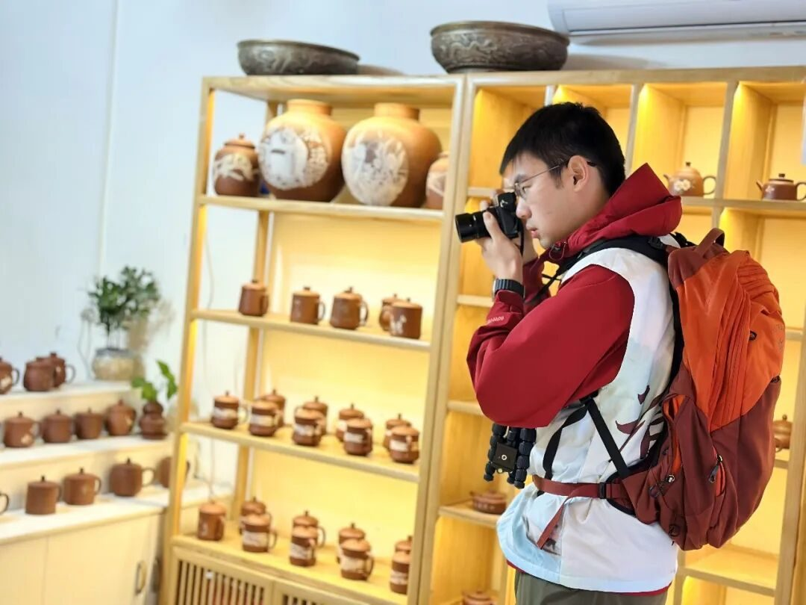

【行者无疆·渝见非遗】个人实践感悟——朱近赤


渝见非遗，这一场持续五日的探访可谓相当精彩。在队长的领导及同学们的互助下，我们深入探访了重庆非遗博物馆及体验中心，川剧博物馆，三峡博物馆，以及荣昌折扇，陶瓷，夏布三处极具特色的非遗文化发源地，收获颇丰。


第一天参观母城非遗展馆。
讲解者是台湾籍的中年男士，很健谈，向我们简要介绍重庆很多非遗项目，如川剧，刘氏艾灸等。在交谈中他提到目前的非遗保护问题是在于“价值与价格的不对等。”，并且由于人才流失，手艺退步，很多产品质量下降，难以打入高附加值的奢侈品市场。他提到：“当保安的收入比做手工艺品更高，于是那些老手艺人们也逐渐放弃了曾经的技艺。”我认为这确是当今非遗文化保护的核心问题之一了。最后临走时与讲解者闲聊时，提到他曾经在台湾从事IT行业，也正是对家乡文化的热爱才选择回家，传播这些文化。非遗虽有式微之势，但其仍是连接着中华民族的重要纽带。
下午参观体验馆，确感受到目前的非遗体验收费较高，但内容同质化明显。形式主义的文化复兴终究还是难以真正激发人们的兴趣与热情。


第二天参观川剧博物馆以及三峡博物馆，了解到从猿人时期直至当下的川渝历史。
第三日转战荣昌，下午探访荣昌折扇厂。
荣昌折扇厂，目前是一处巷子里的小门面房。但这小店里却也浓缩了荣昌折扇半个多世纪的历史。折扇厂的辉煌与颓败并存其中，最终归于一间小屋的平静。制扇体验中，我“勉为其难”地上去体验了一番。可能得益于手比较巧吧（嘿嘿嘿自夸一下），在老师的指导下竟做出了一把折扇。包浆的案板，米糊（说实话我以为这东西已只存在于历史中了），制扇工具等物什，无声陈述着尹春莲老师对手艺的坚守。尹老师五十余岁，在折扇厂工作了30多年，见证了荣昌折扇的崛起与没落，眼中却仍有一缕光，热情地同我们交流。这种超脱于商品经济利益关系的热爱令人敬佩。但客观来说，折扇作为实用价值消解而仅具观赏价值的东西，我认为其消失可能难以避免，也许这种平静的现状的维持，也许就是其最好的结局。

第四日参观刘吉芬老师的陶器厂。柴窑中的草木灰落在陶器上，为陶器施以亮银色的釉，有道法自然，浑然天成的美。
第五日上午参观一宁夏布：年轻的店主从店门口折下苎麻，用刀分离出纤维，绩麻成线，穿入扣眼，表演夏布编织。以前我对纺织这一领域毫无概念，看见他的演示以后，亦深深惊叹于这一过程的巧妙。目前他们店主攻夏布寝具，也算充分发挥了夏布抗菌的功能，实现了真正的创新，而非简单如“夏布折扇”这种简单的元素堆砌了。



从主城的博物馆到荣昌区中鲜活的非遗，那些前人的智慧在一代代的传承与创新中得以延续，以顽强的生命力走下去。
以上，记十七期行者无疆
行者无疆
来源 | 行者无疆实践团
文字 | 朱近赤
图片 | 行者无疆实践团
编辑 | 冯语城
审核 | 刘辰锡
责编 | 邹靓靓 周 亮